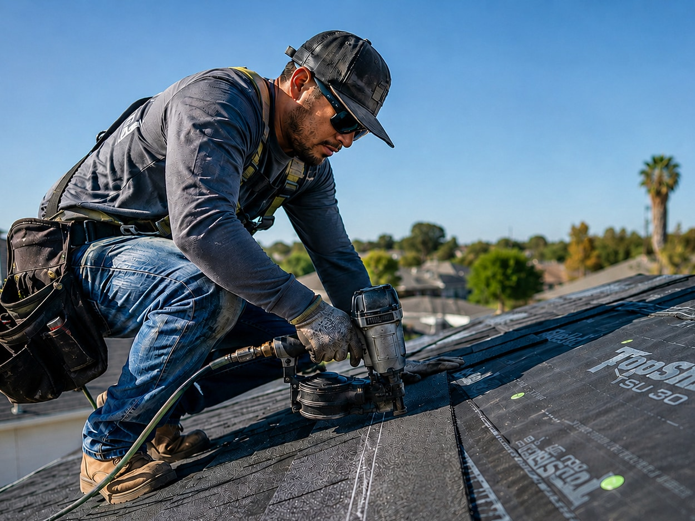

Hurricane Isaias Insurance for Contractors Rebuilding Pensacola
After Hurricane Isaias, homes and businesses across Pensacola, Escambia County and Santa Rosa County will need roof repairs, framing repairs, tree removal and storm debris pickup. If you're a roofer, framer, tree service or debris removal contractor taking on hurricane repair work, you'll need workers' compensation, general liability and commercial auto insurance before the job starts. General contractors, property managers and HOAs will ask for proof of all three. We get Pensacola storm contractors covered fast and send certificates of insurance the same day whenever the carrier allows.
Isaias Hit the Same Coast That Ivan and Sally Taught Some Hard Lessons
Hurricane Isaias reached the northern Gulf as a major Category 3 hurricane in October 2026. Hurricane and storm surge warnings covered Escambia, Santa Rosa and Okaloosa counties. Forecasters called for hurricane-force gusts along Pensacola Bay and Pensacola Beach, heavy rain across the Panhandle and dangerous surge from Perdido Key to Navarre. Pensacola has been here before. Ivan in 2004 knocked spans of the I-10 Escambia Bay Bridge into the water. Sally in 2020 dropped well over a foot of rain on downtown and sent loose construction barges into the Pensacola Bay Bridge. After both storms, the rebuilding went on for years.
Each of those recoveries drew a wave of contractors into Escambia and Santa Rosa County: local outfits stretched thin, crews from Alabama, Georgia and Texas, and plenty of people who bought a chainsaw and a trailer that week. The work went to the contractors who could prove they were insured on day one. Pensacola general contractors, property managers, condo associations on the beach and the bigger institutional owners know what an uninsured sub can cost them. They check certificates closely, and a missing or out-of-state policy will cost you the job.
This page is for contractors working the Isaias recovery. It covers the three policies they'll be asked to show, the mistakes that cost storm crews money, and how to get covered quickly.
The Three Policies Every Isaias Recovery Job in Pensacola Will Ask For
One call, one application, three quotes. Most storm contractors need all three — and the gaps between them are where claims go unpaid.
Workers' Compensation
Storm work is some of the most injury-prone work in construction: wet, storm-damaged roofs, chainsaws on trees under tension, long shifts in October heat. In Florida construction, coverage is generally required from your first employee.
- Roofers, tarp crews, tree and debris crews, drywall tear-out, mold and water mitigation
- Florida-compliant coverage for crews coming in from out of state
- Help with officer exemptions, so the owners don't pay for coverage they don't need
General Liability
A tarp blows off and soaks the bedroom ceiling. A limb you're cutting lands on the neighbor's carport. A dumpster cracks a driveway on Scenic Highway. GL is the policy that pays for damage to other people's property and for injuries to people who don't work for you.
- Additional insured and waiver-of-subrogation wording GCs and HOAs require
- Policies written for roofing, tree work and debris removal, not policies that exclude them
- Limits that clear commercial, condo and property-management contracts
Commercial Auto
After the storm, the trucks are working as hard as the crews. Debris trailers on I-110, dump trucks on Nine Mile Road, crew vans crossing the Three Mile Bridge before sunrise. Haul for pay on a personal auto policy and the claim can be denied.
- Pickups, trailers, dump trucks, grapple trucks and crew vans
- Hired and non-owned auto for rentals and employees' own vehicles
- Coverage that follows trucks registered in another state
Who's Working the Isaias Recovery — and What Each of Them Needs
Roofing & Dry-In Crews
In the first weeks it's tarps and temporary dry-ins, and the permanent re-roofs come after that. Roofing has some of the highest workers' comp rates in Florida, and many GL carriers exclude it outright. Before any Pensacola GC hires you, they'll check that your policy actually lists roofing. Roofing workers' comp · Roofing GL
Tree Service & Debris Removal
Pensacola's live oaks and longleaf pines will be down across roofs, fences and power lines from Cordova Park to Warrington. Tree work is rated separately from general labor, and debris hauling brings heavy commercial auto exposure with it. Tree service workers' comp · Tree service GL

Water, Mold & Restoration
Surge and flooding in low-lying neighborhoods mean tear-outs, drying equipment and mold work. Check whether your GL has a pollution or mold exclusion before you take a remediation contract.
General Contractors Running Rebuilds
You're responsible for your subs. In Florida, if a sub has no workers' comp, that sub's injured worker can end up on your policy. Collect and check every certificate. GC coverage
Electrical, Plumbing & HVAC
Meters pulled from the walls, flooded condensers, panels to replace. Licensed trades have a lot of permitted work ahead of them. Electrical · Plumbing · HVAC
Six Mistakes That Cost Storm Contractors in the Panhandle
We saw all of these after Ian in Southwest Florida. Expect the same in Pensacola after Isaias.
Showing up with home-state workers' comp only
A Georgia or Texas policy generally won't meet Florida's requirements for work in Florida. Pensacola GCs know this and will turn you away at the gate.
Hauling debris on a personal auto policy
Paid hauling is business use. If a loaded trailer causes a wreck, a personal carrier can deny the claim and the bill is yours.
Using a GL policy that excludes your work
Plenty of cheap GL policies exclude roofing, tree removal or work above a certain height. It looks fine on the certificate and pays nothing when you have a claim.
Hiring uninsured subs to keep up
When the jobs pile up, it's tempting to hire whoever is available. Under Florida law, their uninsured workers can become your workers' comp claim and your experience mod.
Putting the whole crew on exemptions
Florida limits construction exemptions to owners with at least 10% ownership, and a corporation can exempt no more than three officers. Everyone else needs coverage. Stop-work orders and penalties get expensive quickly.
Working without the right license
Florida takes unlicensed contracting during a declared emergency far more seriously, and it can be charged as a felony. Insurance doesn't replace licensing, so check your scope with DBPR and the local building department.
From Phone Call to Certificate: Getting Covered for Isaias Work
You can't bid storm work until you can show a certificate. Here's how we get you there quickly.
Tell us the work, the crew and the trucks
Ten minutes on the phone: your trades (tarping, tree removal, re-roofing, hauling, remediation), estimated payroll, the number of workers, which vehicles you'll run and who drives them.
We take it to multiple carriers
We're an independent brokerage, not a captive agent, so we can take your submission to several carriers that write storm trades. Your rate isn't stuck with one company that may have stopped writing new business in the Panhandle.
Pick your coverage and we bind it
We'll walk you through the quotes in plain language: what each one covers, what it excludes and what the deposit is. Then we bind the policies you choose.
Certificates go to every GC, HOA and property manager
Additional insured endorsements, waivers of subrogation and per-project certificates, sent where they need to go so your crew can start.
Adjust as the work changes
Tarping turns into re-roofing, and a few trucks turn into a fleet. We update payroll, add vehicles and raise limits as your Pensacola work grows, so you don't get hit with a large audit bill later.
Have This Ready When You Call
- Business name, entity type and FEIN
- Florida contractor license number, if you have one
- Trades you'll perform in Pensacola, and the percentage of each
- Estimated payroll for the next 12 months, by trade
- Number of employees and any 1099 subcontractors
- Owners and officers who may qualify for an exemption
- VINs, year, make and model for every truck and trailer
- Driver names, dates of birth and license numbers
- Current policies and three to five years of loss runs
- Certificate requirements from the GC, HOA or property manager
Isaias Recovery Coverage Across Escambia & Santa Rosa County
Our office is in Southwest Florida. We work with Panhandle contractors by phone and email, the same day you call, wherever the job is.
Hurricane Isaias Contractor Insurance: Pensacola FAQ
Usually not on its own. Florida generally expects coverage that meets Florida's requirements for work performed in Florida, and general contractors and property managers in Pensacola routinely reject certificates that don't show it. Get the Florida piece in place before your crew rolls south, not after a GC turns you away at the gate.
When the carrier binds the same day, we can often issue a certificate the same day too. Speed depends on the trade, your loss history and how complete your information is when you call. Have your FEIN, estimated payroll by trade, vehicle list and driver list ready.
Personal auto policies commonly exclude or restrict business use, and debris hauling for pay is squarely business use. If a loaded trailer jackknifes on Nine Mile Road and your personal carrier denies the claim, the bill is yours. A commercial auto policy, or at minimum a proper business-use endorsement, is the safer route.
In Florida construction work, coverage is generally required from the first employee. Roof tarping and many repair tasks fall within construction. An owner may be able to file an exemption if eligible, but the helper still needs to be covered.
Florida treats unlicensed contracting during a declared state of emergency far more seriously than at other times, and it can be charged as a felony. Insurance does not replace licensing. Confirm what your scope of work requires with the Florida DBPR and the local building department before you start.
Please note: This page is for general educational and informational purposes only and does not constitute legal or insurance advice, nor a quote or offer of coverage. Storm details reflect National Hurricane Center and local forecast information available in October 2026. Coverage availability, binding authority, terms and pricing vary by carrier, trade and individual business circumstances, and carriers may restrict new business in areas under an active storm watch or warning. Licensing requirements are set by the State of Florida and local jurisdictions. Contact us directly for an accurate, current quote.